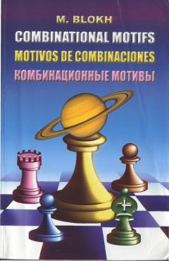

KMShaxmat taktikasi va kombinatsion usullarni o'rgatuvchi keng qamrovli mashqlar to'plami.
Ushbu kitob xalqaro grossmeyster Maksim Blox tomonidan yozilgan bo'lib, 1400 dan ortiq shaxmat kombinatsiyalari va taktik usullarini o'z ichiga oladi. Qo'llanma shaxmatchilarning kombinatsion ko'rish qobiliyatini rivojlantirish va taktik hisoblash texnikasini takomillashtirishga qaratilgan.